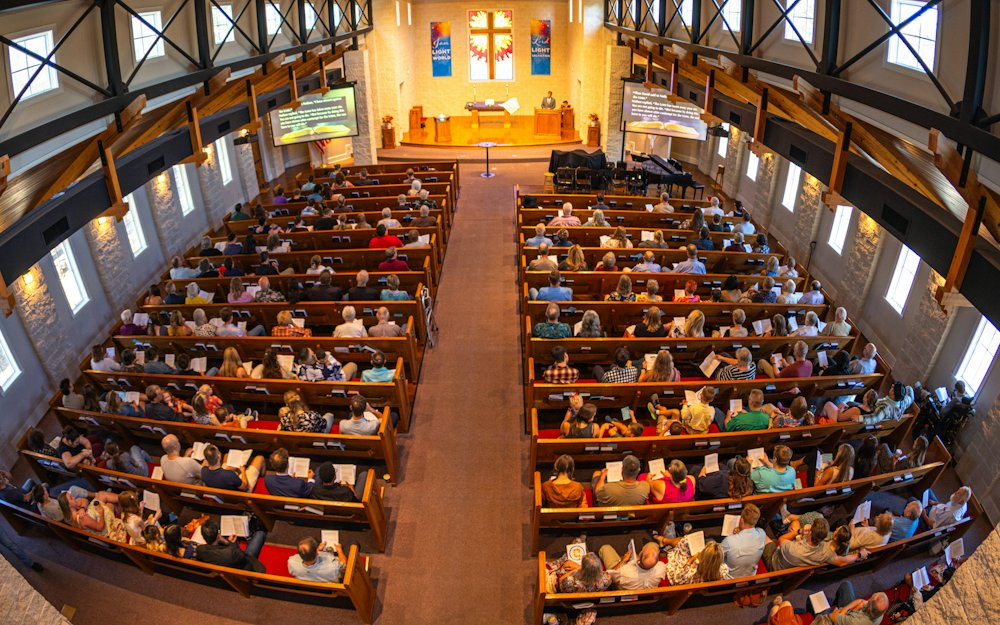
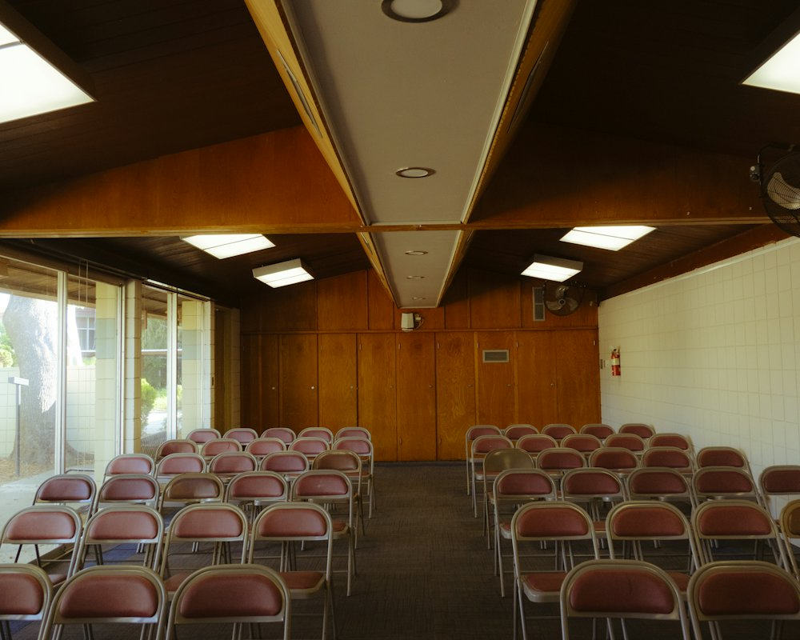
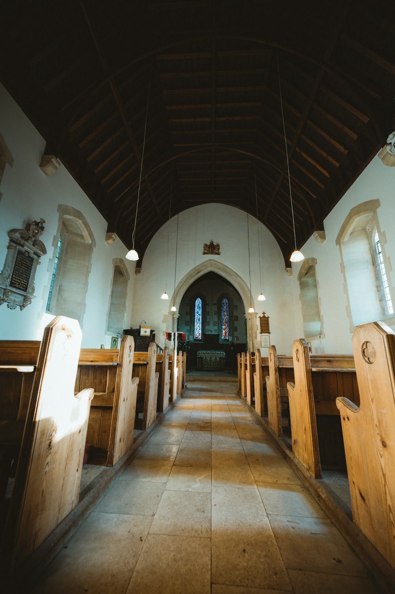
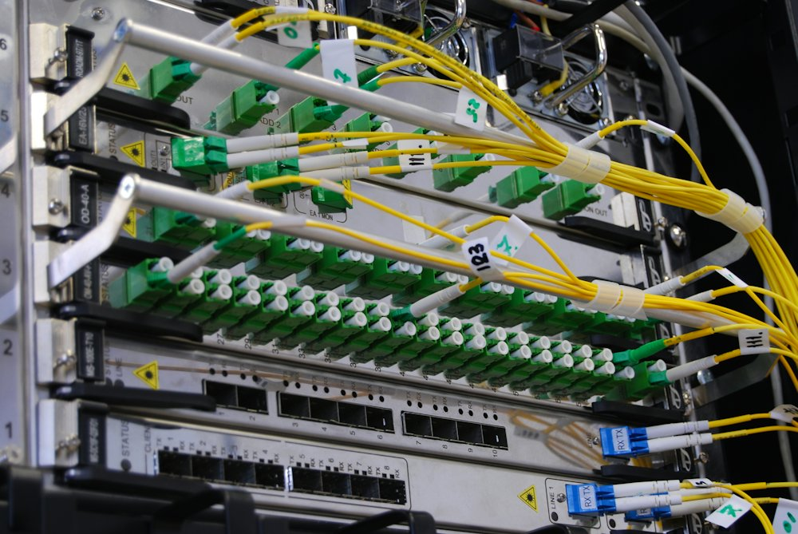
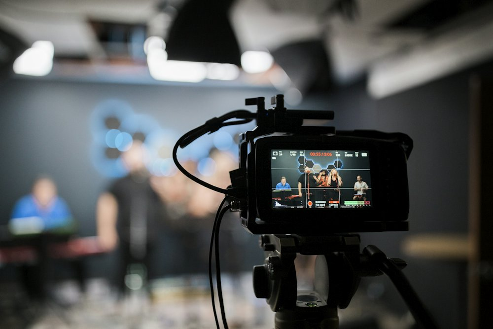
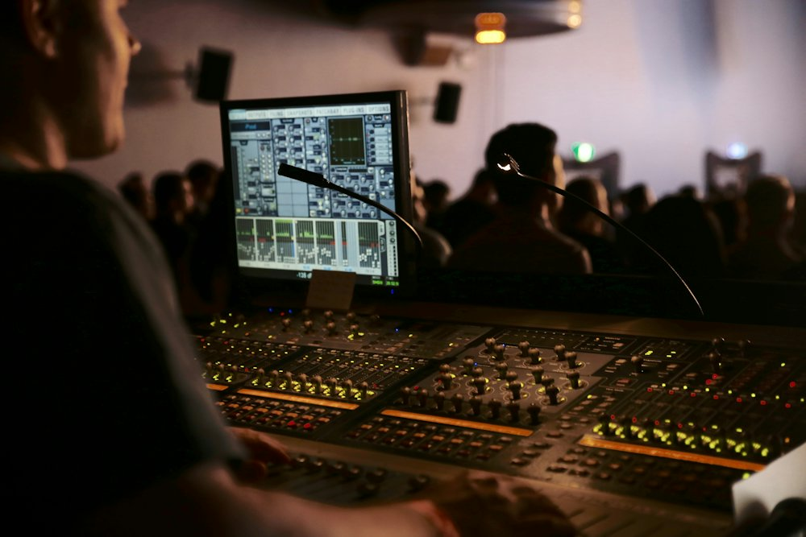
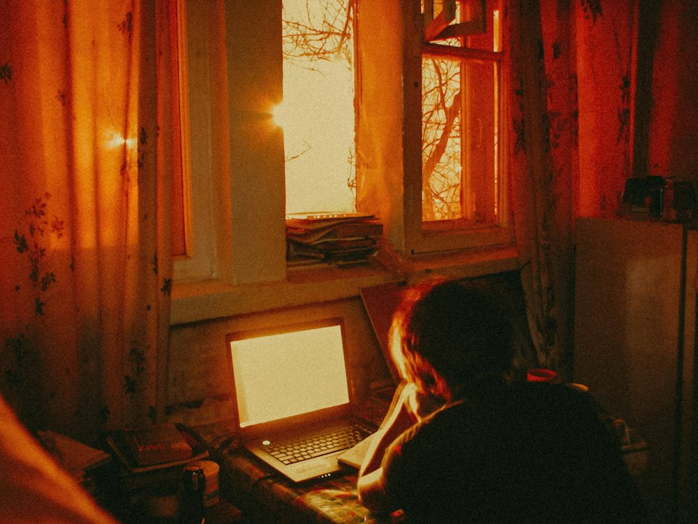

Send a live service from your main campus to any number of satellite campuses over ordinary venue internet — using nothing but an S3-compatible bucket you control.
Two OBS Studio plugins. No subscription, no dedicated encoder or decoder hardware, no inbound ports at any site, and no company that can price you out later.
Free software under the GPLv3. Built by the projects team at Stage Audio Works, a worship AVL integrator working across Africa.
Why this exists
Multisite streaming is well served by commercial platforms, and the teams behind them have earned their place. But those platforms are largely unavailable outside the developed world — and where they are available, the recurring cost can exceed a congregation's entire annual AV budget.
This is a set of tools instead of a managed service. Nobody answers the phone. In exchange: you own the storage, you own the content, and the ongoing cost is a few dollars a month of object storage.
The design priority, in order, is reliability, then quality, then simplicity — and latency last. A campus that is a minute behind but never drops a frame is worth far more than one that is two seconds behind and stutters.
Everything is written to disk before it is sent, sent again until the bucket confirms it, and buffered deeply at the far end before it plays. Minutes of the service sit at the campus in advance, so an outage part-way through is something the congregation never sees.
How it works
The main site muxes OBS's encoded frames into CMAF segments and writes them to a bucket. Each campus polls two small JSON files to find what is live, then pulls segments down ahead of playback into a local cache. There is no central server, no database and no vendor — the bucket is a dumb file store, and all of the intelligence is at the edges.
The invariant that makes it reliable: a segment is listed in the manifest only after the bucket has confirmed it stored. If a campus can see an entry, the object exists. Retries, crash resume and deep buffering all build on that one rule. Every one of those JSON documents also carries a protocol version, so a decoder refuses a bucket it doesn't understand and says so, rather than half-reading it.
Very little, and deliberately so. Everything moves over ordinary HTTPS to object storage. There are no inbound connections, no port forwarding, no static IP, no VPN and no firewall rules to negotiate with a building's IT department. It works on connections that would defeat a direct stream: mobile data, LEO satellite, consumer fibre, and networks behind carrier-grade NAT. If a laptop at the site can load a web page, it can usually send or receive a service.
A satellite that happens to share a network with the main site — or reaches it over a VPN the church already runs — can skip the bucket entirely: it downloads straight from the encoder, automatically, and falls back to cloud per segment the instant it can't. Cloud storage is still what every other satellite and the archive depend on, but for a single building it can be switched off altogether.
Features
Everything below is built and running today.
Durable store-and-forward upload. Nothing is lost through a dropped link, a crash, or a mid-service restart — the encoder keeps recording to disk and sends the backlog when the connection returns. A capped local queue and a plain healthy/low/almost-full readout mean a filling disk is noticed before it costs a segment.
A satellite on the same network as the main site, or reachable over a VPN the church already runs, downloads straight from the encoder instead of the bucket — preferred automatically, with cloud as the fallback the instant it isn't reachable. Cloud storage can be switched off entirely too, for a single building that wants no off-site copy at all.
Hold the picture for a local welcome, resume, then catch up to live — or sit a set number of minutes behind all service. Scrub back, jump to a marker. What one campus does has no effect on any other.
Six tracks travel inside the same fragment and appear at the campus as separate sources — one download, one playout clock. Put whatever the room needs on them: a mix, individual mics on their own tracks, a click for the band. Label them once and the campus sees “Click”, not “Track 3”.
A Raspberry Pi 5 appliance with HDMI output, a splash and idle screen, and a browser control panel — installed by one script. No OBS at the far end, nothing for a volunteer to click by accident.
A separate container reads the same segments and pushes them to YouTube, Facebook or any RTMP destination — or over SRT to a broadcast partner or hardware decoder. You never upload the service twice.
The interpreter feeds from the desk travel as separate audio tracks, and the relay sends a different one to each destination — English to one stream, Spanish to a second, a clean feed to a broadcast partner — all from the single upload the main site already made. The picture is shared; only the sound differs.
Both docks serve a plain-language operator page on the church network. Drop a marker from the back of the room, check buffer depth from a phone. No app to install.
Every command is an obs-websocket vendor request, with events on state change. The Companion module puts them on a Stream Deck with buttons that light up — on air, held, behind live, link offline — and drives the Pi appliance directly too.
The campus lists what the room has recorded — what is on air, what finished, and what was cut short by an encoder that died. Even an interrupted service plays back from the beginning as video on demand.
List the room's services with their sizes from the encoder dock and delete one — or everything older than a chosen number of days — with confirmation and a verification pass. The service on air is never offered for deletion.
The Pi appliance can put its sound on the network as an eight-channel AES67 stream rather than leaving it inside the HDMI picture — so it appears in Dante Controller and routes to any Dante device, or to a console that takes AES67 directly. Open RAVENNA stack, one script, and a switch in the player's own page that shows the address it publishes to and whether the clock has locked.
Composite two or four cameras into one feed and say how at Settings → Media → Pictures in this feed — side by side, stacked, or a 2×2 grid. Each region arrives at the satellite already cropped, as its own source, decoded once no matter how many you pull out of it.
CMAF segments from x264, NVENC, QuickSync or AMF, in H.264 or HEVC. Whatever your main site already encodes with, on whatever GPU it already has.
Pick a storage provider — Cloudflare R2, AWS S3, Backblaze B2, Wasabi, or a custom endpoint — and only the fields it actually needs appear, instead of six blank fields and a hostname convention to look up. The same picker is on both OBS docks, the Pi appliance and the simulcast relay.
About 2.7 GB per hour of service at 6 Mbps. On a provider that charges no egress, sending the same service to ten campuses costs the same as sending it to one.
Use cases
The shape of the tool follows one job — carrying a service from a room with a production team to rooms without one. These are the ways that job tends to show up.

A congregation meets in a second building across town. The main campus preaches live; the satellite takes the feed on a screen, runs its own worship set before and after, and holds the picture while its own host welcomes the room. Timeslipping means the satellite's service order does not have to match the main site's minute for minute.

A new site on mobile data or LEO satellite, behind carrier-grade NAT, with no static IP and no IT department. Because everything is outbound HTTPS and the campus buffers minutes ahead, a link that would make a direct stream unwatchable produces a picture the room never sees falter.

A chapel, a youth room, a foyer screen. A Raspberry Pi appliance per room is cheap enough to leave installed and simple enough that nobody needs to operate it — it boots to an idle screen and picks the service up on its own.

A second room on the same network, or on a VPN the church already runs, pulls straight from the encoder — no bucket in the path, if you choose. Cloud upload can be switched off completely for an event, and every satellite that can reach the encoder still gets the full service; the moment a satellite elsewhere needs it back, turning cloud back on needs no confirmation, since that's always the safe direction.

The relay container reads the same segments already in the bucket and pushes them out to RTMP or SRT, a few minutes behind on purpose. The main site's uplink carries the service once, no matter how many places it ends up.

Several audio tracks arrive in the same download — a programme mix, mics on their own tracks, a click for the band, whatever the room needs. The campus engineer mixes them in the room rather than taking whatever the main site's stereo bus happened to be doing. From the Pi appliance they can leave as AES67 and land in a Dante network, so the console takes them over the same cable as everything else.

Every service is already sitting in the bucket as playable media. A campus can replay a past one from the recordings list, and a finished service downloads as a single MP4 with every audio track intact.
Next door
This is a church streaming project — that is the job it was built for and almost everything here is about doing it well. But the machinery is not church-shaped: one original event, several places that each want it on their own clock, over connections that would defeat a live stream. A few neighbouring cases fit it exactly.
A college or a school group runs a lecture or an assembly from its main site and delivers it to partner campuses, satellite classrooms and overflow halls. Each site's facilitator can hold the feed to run a discussion and resume exactly where it paused — which a live stream cannot do and a recording cannot do live — and a class starting an hour later rewinds to the beginning. The event is uploaded once from wherever it is, so a campus on a bad connection costs nothing extra, and the recording stays in the school's own storage as its archive.
The same shape turns up elsewhere: a club's away fixture shown at several clubhouses with local commentary, a council meeting relayed to branch offices, a conference spilling into overflow rooms that each have their own host, training that has to be identical at every depot. Multiple sites, ordinary internet, and nobody in a hurry.
Tested — {{TAG}}
Run end to end between two machines against real Cloudflare R2, with the Raspberry Pi campus player on real hardware. The run below has been repeated several times since, with the same shape of result every time — this is not a one-off.
Six audio tracks were carried throughout. Timeslipping held a campus a steady two and then three minutes behind live for hours; a scrub back nearly three hours and a return to live both recovered cleanly. Audio and video stayed in sync across the whole run, with the reported A/V offset holding between 0.005 s and 0.021 s through several decoder restarts.
The Raspberry Pi's AES67 output has separately been through its own multi-hour run, picture and sound watched and listened to together the whole way through — no drift, checked by eye and ear.
The full picture — everything not yet proven, and the roadmap through storage redundancy, keeping installations current and paired storage credentials — is kept in the repository under Known gaps and Roadmap.
The install guide gets you broadcasting between two machines in about twenty minutes. You need OBS Studio, a bucket, and a token that can read and write it.